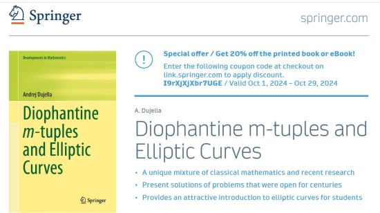
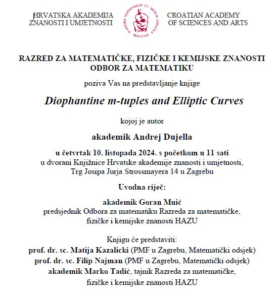
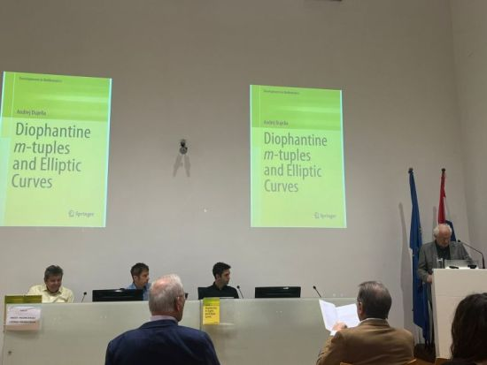

The book can be purchased at
Springer,
Amazon.com,
Amazon.de,
Amazon.co.uk,
Amazon.ca,
Amazon.es,
Amazon.fr,
Amazon.it,
Amazon.com.be,
Amazon.nl,
Amazon.pl,
Amazon.se,
Amazon.com.mx,
Amazon.com.br,
Amazon.com.tr,
Amazon.ae,
Amazon.co.jp,
Amazon.in,
Amazon.sg,
Amazon.com.au.
50% discount price for the Hardcover and eBook versions. The discount price is valid until March 1, 2025, by using coupon code HLT50 on Springer portal.
On the occasion of the book promotion in the Croatian Academy of Sciences and Arts, Springer offers 20% discount for the printed book or eBook. The discount price is valid by using coupon code I9rXjXjXbr7UGE on Springer portal. The details are given in the flyer.

Springer book authors and journal contributors are entitled to order Springer eBooks and print books at a special 40% discount.
The eBook version of the book is available in Springer+ offer (€32.70 for 10 units, full book = 5 units).
Kindle Edition on Amazon.com, Amazon.es, Amazon.nl, Amazon.com.mx, Amazon.com.br, Amazon.co.jp, Amazon.in.
Front matter (Preface, Contents) and back matter (References, Index).
Front matter (Preface, Contents) and Chapter 1 (Introduction) on YouTube
Andrej Dujella: Diophantine m-tuples and Elliptic Curves, published by Springer, Cham, 2024, an article by Nenad Bach and Darko Žubrinić on Croatian World Network
Book review in Bulletin of the Transilvania University of Brasov Series III: Mathematics and Computer Science (by Diana Savin)
Preliminary review in Zentralblatt MATH
Book announcement on Department of Mathematics, Faculty of Science
Book announcement on Croatian Mathematical Society portal
Book announcement on Croatian of Sciences and Arts portal
Andrej Dujella's books on Facebook
Number Theory Web - Number Theory Books, 2024
eBook version is available from many institutions worldwide
(more than 130 according to WorldCat).
Hardcover version is available in several libraries:
Rényi Institute of Mathematics, Budapest,
Eastern Illinois University, Charleston,
Kyushu University, Fukuoka,
Université de Genève,
Technische Universität Graz,
Bibliothèque universitaire Joseph-Fourier, Université Grenoble Alpes,
Technische Informationsbibliothek Hannover,
Kanazawa University,
Keio University,
Universität Klagenfurt,
Kyoto University,
Universidad Nacional Autónoma de México,
Mathematisches Forschungsinstitut Oberwolfach,
University of Oslo,
Institut Henri Poincaré, Paris,
Sapienza Universitá di Roma,
Saint Louis University,
Universidad de Sevilla,
Faculty of Science Split,
Syracuse University,
University of Tokyo,
Polish Academy of Sciences, Warsaw,
Croatian Academy of Sciences and Arts, Zagreb,
Department of Mathematics, Zagreb,
ETH Zürich.


This book provides an overview of the main results and problems concerning Diophantine m-tuples, i.e., sets of integers or rationals with the property that the product of any two of them is one less than a square, and their connections with elliptic curves. It presents the contributions of famous mathematicians of the past, like Diophantus, Fermat and Euler, as well as some recent results of the author and his collaborators.
The book presents fragments of the history of Diophantine m-tuples, emphasising the connections between Diophantine m-tuples and elliptic curves. It shows how elliptic curves are used to solve some longstanding problems on Diophantine m-tuples, such as the existence of infinite families of rational Diophantine sextuples. On the other hand, rational Diophantine m-tuples are used to construct elliptic curves with interesting Mordell-Weil groups, including curves of record rank with a given torsion group. The book contains concrete algorithms and advice on how to use the software package PARI/GP for solving computational problems relevant to the book's topics.
This book is primarily intended for researchers and graduate students in Diophantine equations and elliptic curves. However, it can be of interest to other mathematicians interested in number theory and arithmetic geometry. The prerequisites are on the level of a standard first course in elementary number theory. Background in elliptic curves, Diophantine equations and Diophantine approximations is provided in the book. An interested reader may consult also the recent Number Theory book by the author.
The author gave a course based on the preliminary version of this book in the academic year 2021/2022 for PhD students at the University of Zagreb. On the course web page, additional materials, like homework exercises (mostly included in the book in the exercise sections at the end of each chapter), seminar topics and links to relevant software, can be found. The book could be used as a textbook for a specialized graduate course, and it may also be suitable for a second reading supplement reference in any course on Diophantine equations and/or elliptic curves at the graduate or undergraduate level.
Preface
1. Introduction
1.1. Diophantus of Alexandria
1.2. Pierre de Fermat
1.3. Leonhard Euler
1.4. Definitions, main problems and conjectures
1.5. Generalizations of Diophantine m-tuples
1.6. Exercises
2. Elliptic curves over the rationals
2.1. Introduction to elliptic curves
2.2. Equations of elliptic curves
2.3. Elliptic curves in the software package PARI/GP
2.4. Torsion group
2.5. Rank of elliptic curves
2.6. Canonical height and Mordell-Weil basis
2.7. Exercises
3. Elliptic curves induced by Diophantine triples
3.1. Obvious rational points and regular m-tuples
3.2. Rational Diophantine sextuples via points of order 3
3.3. Rational Diophantine sextuples via regularity conditions
3.4. Rational Diophantine sextuples via Edwards curves
3.5. Rational Diophantine sextuples with square denominators
3.6. Elliptic curves of high rank with prescribed torsion group
3.6.1 Torsion group Z/2Z × Z/2Z over Q(t)
3.6.2 Torsion group Z/2Z × Z/2Z over Q
3.6.3 Torsion group Z/2Z × Z/4Z
3.6.4 Torsion group Z/2Z × Z/6Z
3.6.5 Torsion group Z/2Z × Z/8Z
3.7. Rank zero elliptic curves induced by rational Diophantine triples
3.8. Torsion groups of elliptic curves induced by integer Diophantine triples
3.9. Elliptic curves induced by Diophantine triples over quadratic fields
3.10. Elliptic curves induced by rational Diophantine quadruples
3.11. Exercises
4. Integer points on elliptic curves
4.1. Preliminaries on Diophantine equations
4.1.1 Pell's equation
4.1.2 Continued fractions
4.1.3 Pellian equations
4.1.4 Linear forms in logarithms
4.1.5 Simultaneous Diophantine approximation
4.2. Mordell's equation
4.3. Thue equations
4.4. Transformation of elliptic curves to Thue equations
4.5. Algorithm for solving Thue eq
4.6. Application of elliptic logarithms
4.7. Baker-Davenport theorem
4.8. Infinite families of elliptic curves
4.8.1 System of generalized Pellian equations
4.8.2 Congruence method
4.8.3 Integer points under assumption of minimal rank
4.9. Fibonacci numbers and Hoggatt-Bergum conjecture
4.9.1 Hoggatt-Bergum conjecture
4.9.2 Regular triples and integer points on elliptic curves
4.9.3 Diophantine quadruples for squares of Fibonacci numbers
4.10. An absolute bound for the size of Diophantine tuples
4.10.1 Lower bounds for solutions
4.10.2 Special cases of the unique extension conje
4.10.3 Proofs of absolute upper bounds
4.11. Diophantine quintuple conjecture
4.11.1 There are no Diophantine sextuples and only finitely many
Diophantine quintuples
4.11.2 On the proof of non-existence of Diophantine quintuples
4.12. Exercises
5. Sets with the property D(n)
5.1. Existence of D(n)-quadruples
5.2. Bounds for the size of D(n)-tuples
5.2.1 Large elements
5.2.2 Small elements
5.2.3 Very small elements
5.2.4 Diophantine m-tuples for primes
5.3. Existence of rationalD(q)-quintuples
5.4. Sets with the property D(n) for several values of n
5.4.1 D(n)-triples for several values of n
5.4.2 Diophantine quadruples with properties D(n1) and D(n2)
5.4.3 Doubly regular Diophantine quadruples
5.4.4 D(n)-quintuples with square elements .
5.5. Exercises
References
Index
Please send your comments, remarks and suggestions on the book by e-mail to duje@math.hr.
I will be grateful to anyone who points out inaccuracies or errors in the book.
Solutions and relevant information on open problems are, of course, very welcomed.
Open problems on Diophantine m-tuples and elliptic curves
| Diophantine m-tuples page | Andrej Dujella - home page |